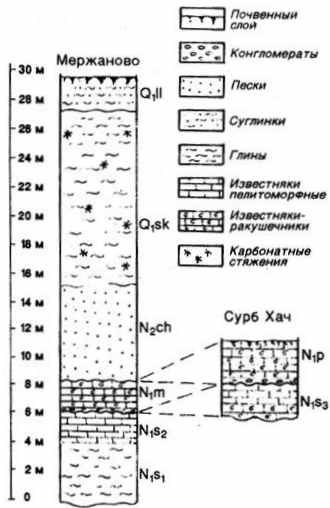
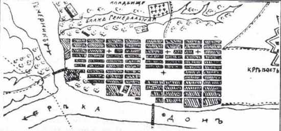

Начинался ли Ростов-на-Дону с «Богатого колодезя»? // Южно-Российская газета "Турист". 2009 г. №7 (167).
(взгляд географа - краеведа)
В преобладающем большинстве краеведческих очерков, в которых рассказывается об истории Ростова-на-Дону, используется легенда о том, как Петр I в период 2-го Азовского похода, состоявшемся весной-летом 1696 г., прогуливаясь по правому берегу Дона, (пока ремонтировали суда первого российского флота в устье реки Темерник), испил водицы из некоего источника и воскликнул «Богатый колодезь». И от этого места и пошел, по их мнению, расти Ростов-на-Дону. Краеведы указывают точное место нахождения источника: там, где Богатяновский спуск выходит на набережную Дона.
Я никогда не мог принять данную историю, так она противоречит ряду очевидных фактов. Предлагаю еще раз попытаться выяснить, используя метод научного анализа, где то место, откуда начинался Ростов-на-Дону.
Но сначала вспомним, что такое легенда.
«Легенда - это основанное на устных преданиях, опоэтизированное сказание об историческом или вымышленном лице, событии и т.п.» (Словарь русского языка: В 4-х т. М.: Русский язык, 1985 - 1988).
Следовательно, легенда ни в коей мере не является историческим описанием события. Наши же многие краеведы, а также экскурсоводы принимают легенду о Петре I и «Богатом колодезе» за нечто, состоявшееся в действительности, и в экскурсиях, говоря и развитии Ростова, начинают повествование с источника «Богатый колодезь».
Напомню, Петр I во время 2 - го Азовского похода был очень молод, в походе ему исполнилось всего 24 года. Но с ранних лет он отличался любознательностью, и не вызывает сомнений, что первую свою прогулку по высокому правому берегу Дона Петр совершил в хорошо сохранившееся городище, расположенное на левом берегу Темерника у впадения его в Дон, названное археологами много позже «Темерницким». Уцелевший вал, под защитой которого люди строили жилища полторы тысячи лет назад, погреба для хранения съестных припасов, загоны для скота, колодцы и др., все интересовало царя. Здесь он мог испить и воды из городищенского колодца, произнеся при этом: «Богатый колодезь».
В легенде говорится о колодце. Думаю, Петр хорошо понимал разницу между родником (криницей) и колодцем и не мог выбивающийся на береговом склоне поток воды, (а родник «Богатый колодезь» таковым и является), назвать колодцем. Других колодцев, кроме как городищенских в окрестностях быть не могло. Во-первых, с какой целью их рыть, когда во многих местах изливаются мощные родники, а во вторых, кому и для кого их копать, ведь будущая территория Ростова-на-Дону в конце XVII в. представляла собой ненаселенную местность.
В настоящее время в связи с мощным антропогенным прессом на геологическую среду города ряд родников исчезло на правом высоком берегу Дона, но на территории Ростова их в настоящее время насчитывается более 50 [ 1 ]. Резко упал дебет «Богатого колодезя».
В XVIII - XIX вв. родники били по всему донскому склону как в верхних, так и в нижних его частях, что определялось геологическим строением берега, наличием водоупорных горизонтов. В верхних частях выходы подземных вод связаны с нижнечетвертичными - современными отложениями, в нижней - комплексом неогеновых сарматских отложений.
Наблюдать особенности геологического строения территории Ростова-на-Дону и окрестностей, при желании, можно в районе хут. Мержаново, расположенного на северном берегу Таганрогского залива. (В Ростове из-за застройки территории найти полный геологический разрез не представляется возможным). В Мержаново геологи изучают типовое обнажение неогеновых и четвертичных пород, характерное для Нижнего Дона, куда входит и территория Ростова-на-Дону (рис. 1).

Рис. 1. Стратиграфическая колонка неогеновых и четверичных отложений в районе хут. Мержаново [ 2 ]
Самые мощные источники, в том числе и «Богатый колодезь», были связаны с толщей темно-серых глин нижнесарматского возраста (N1s1).
По причине высокого дебета «Богатый колодезь» имел большое значение в водоснабжении Ростова-на-Дону в XIX - начале XX вв. Но с ним связана также одна из драматических страниц в жизни города.
В историю эпидемиологии вошла эпидемия брюшного тифа в Ростове-на-Дону, наблюдавшаяся в 1926 г. Причиной стало заражение воды в роднике «Богатый колодезь». Пять дней, с 23 по 27 апреля, в результате прорыва канализационных вод происходило ее загрязнение. Только 28 апреля было устранено повреждение и проведено хлорирование сети водоснабжения. А 29 апреля начались массовые заболевания кишечными расстройствами. Всего за время эпидемии, пик которой пришелся на май, было зарегистрировано 2935 больных [ 3 ].
Поэтому, когда сегодня появляются публикации с призывами обустройства источника «Богатый колодезь» и превращения его в питьевую галерею, следует вспомнить события 1926 г. и учесть, что состояния канализационной сети города находится не в идеальном состоянии.
Многие краеведы с источником «Богатый колодезь» связывают местоположение Темерницкой таможни, начало создания которой относится к 1749 г.
Указ императрицы Елизаветы Петровны гласил о следующем: «для сбора по тарифу и внутренних пошлин с привозимых из турецкой области и отвозимых из России за границу товаров» создать таможню против урочища Богатый колодезь на правом берегу Дона выше впадения в него реки Темерник.
Но рядом ли с «Богатым колодезем» были созданы таможня и порт? Подходит ли это место для строительства порта или был выбран лучший участок?
Необходимо признать, что место в районе нынешнего «Богатого колодезя» крайне неудобное как для строительства и дальнейшей работы таможни, так и организации порта. Узкая донская терраса и крутой высокий берег представляли серьезные ограничения при строительства зданий таможни, жилых домов, складских помещений.
Особенно много проблем возникло бы с созданием порта. В этой части Дон отличается значительным течением. В летнюю и осеннюю межень оно составляет 0,5 - 0,7 м/c, в период весеннего половодья, которое продолжается почти 2 месяца, в апреле и мае, достигает 1,5 м/с. Суда должны были стоять на якоре, ведь причальной стенки не было. Дно образовывали средне- и крупнозернистые плотные пески, что создавало дополнительные проблемы для постановки судна на якорь. При мощном течении сложно было перегружать грузы в лодки и далее на берег.
Рядом, ниже по течению Дона находилось другое место, более предпочтительное для строительства таможни и порта. Это устьевая часть реки Темерник. В конце XVIII она имела ширину более 100 метров и глубины достигали 6 м. Река подпиралась водами Дона, поэтому скорость течения в ней была небольшая, не превышающая 0,3 м/с. Подобные гидрологические особенности Темерника были крайне благоприятными для организации в его устьевой части стоянки судов на рейде и у причальной стенки при разгрузке. Левый берег Темерника был положе донского и более подходил для строительства таможенных сооружений.
То, что для таможни и порта была выбрана территория в устьевой части Темерника подтверждает и первый план поселения 1781 г., которое будет названо в 1806 г. городом Ростовом. В этот план не вошла территория вокруг нынешнего «Богатого колодезя». Она находится восточнее за пределами рисунка, южнее крепости Димитрия Ростовского, западные бастионы которой можно видеть в правой части рисунка (рис. 2). Не оказалось территории нынешнего «Богатого колодеза» и в плане Ростова 1806 г., названного уездным городом (нынешняя территория Ростова-на-Дону от Ворошиловского проспекта до р. Темерник).
Если «Богатый колодезь» и прилегающая к нему территория не включены в первые планы Ростова, то это, без сомнения, свидетельствует о создании таможни в другом месте.
Можно считать, что легенда о Петре I, испившем воды на донском берегу, производное местного фольклора XIX в., до этого нет сведений о ее существовании.

Рис. 2. План поселения на месте западной части территории старого Ростова-на-Дону. 1781 г. [ 2 ]
По нашему мнению, связывать возникновение Ростова-на-Дону с «Богатым колодезем», вроде бы названным так Петром I, и далее Темерницкой таможней не имеет никаких оснований.
Деятельность Петра I в Приазовье не была связана с созданием на Дону в ненаселенном месте таможни, которая, попросту, здесь была ни к чему. Он стремился прорубить окно в Европу и поэтому основал Таганрог - морской порт. Создавать речной порт в 50 км от моря не входило в его планы.
Темерницкая таможня была организована через 53 года после 2-го Азовского похода. На российском троне за это время посидели, сменяя друг друга, Екатерина I, Петр II, Анна Ивановна, Иван VI и, наконец, Елизавета Петровна. Кому уж было помнить о том, где и как испил воды молодой царь полвека назад.
Ростов-на-Дону в отличие от других городов формировался согласно определенным правительственным директивам, определяющим когда начинать строить очередную часть будущего города-миллионера:
Указа о создании таможни, подписанного императрицей Елизаветой Петровной 15 декабря 1749 г.;
Указа о строительстве второй части Ростова-на-Дону - крепости Димитрия Ростовского в 1761 г.;
Высочайшей грамоты императрицы Екатерины II в 1779 г. о праве армян-переселенцев из Крыма на строительство третьей части - города Нахичевана.
Единым же городом он стал 28 декабря 1928 г., когда Административная Комиссия при президиуме ВЦИК постановила объединить Ростов-на-Дону и Нахичевань-на-Дону в один город и присвоить ему наименование Ростов-на-Дону.
Факты говорят о том, что расти город начал с левого берега реки Темерник в его устьевой части, где была заложена на будущей территории Ростова-на-Дону первая таможня.
Источники
1. Назаренко О.В. Родники Ростова-на-Дону и их эколого-географическое значение // Эколого-географический вестник Юга России. 2000. № 1. - С. 107 - 109.
2. Щиров В.Т., Ковалев В.В. Геологическое строение // Природа Ростова-на-Дону. Составитель и ответ. редактор Г.П. Долженко. Ростов н/Д: Изд-во Рост. ун-та, 1999. - С. 21 - 34.
3. Безденежных И.С. Эпидемиология. Учебник. М.: Медицина, 1971. - 320 с.
4. План г. Ростова-н/Д. 1781. URL: http://old-map.narod.ru/rost.html (дата обращения: 28.06.2009).